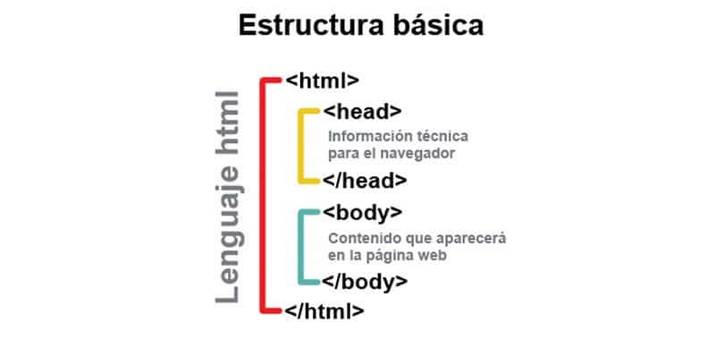
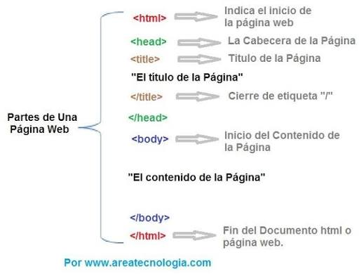
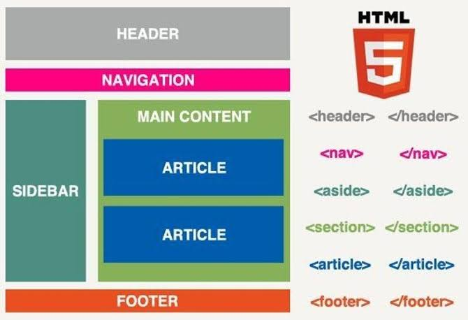

INTRODUCCIÓN A HTML
REGRESAR
BREVE HISTORIA DE HTML
ChatGPT fue creado por OpenAI y se lanzó públicamente en noviembre de 2022. Es un chatbot basado en inteligencia artificial capaz de comprender y generar texto. Con el tiempo, se lanzaron modelos más avanzados que mejoraron sus capacidades. ChatGPT incorporó funciones como análisis de imágenes, archivos, voz y búsqueda en Internet. Actualmente se utiliza para estudiar, programar, escribir, investigar y realizar muchas otras tareas.
Estructura de un Etiqueta HTML



ESTRUCTURA BASICA DE UNA PAGINA WEB HTML


ESTRUCTURA SEMATICA DE UAN PAGINA WEB HTML